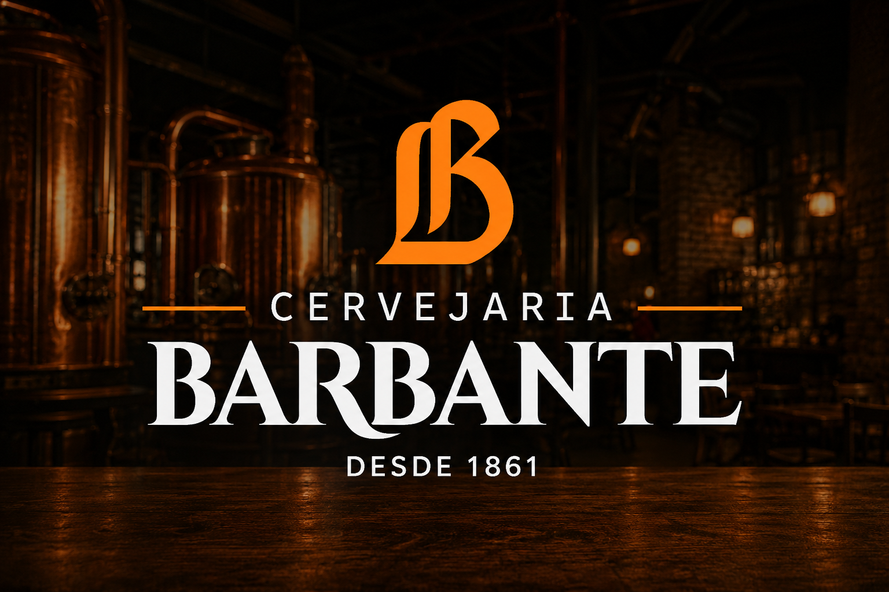

Uma história iniciada por imigrantes alemães, preservada por gerações e resgatada mais de um século depois para devolver a Juiz de Fora um dos maiores patrimônios cervejeiros do estado.

Em 1861, o imigrante alemão Sebastian Kunz trouxe para Juiz de Fora o conhecimento e a tradição cervejeira de sua terra natal. Em uma época em que Minas Gerais ainda dava seus primeiros passos rumo à industrialização, surgia uma cervejaria que marcaria a história do estado: a Barbante. Seu nome nasceu de uma prática comum da época, quando barbantes eram utilizados para prender as rolhas das garrafas e impedir que fossem expulsas pela pressão da fermentação.
Fundação da primeira cervejaria de Minas Gerais.
Expansão da produção e consolidação da tradição cervejeira.
Encerramento das atividades após o falecimento do fundador.
Pesquisa e redescoberta da história da família.
Renascimento da Cervejaria Barbante.
Hoje a Cervejaria Barbante une tradição, gastronomia, cervejas artesanais e experiências que conectam passado e presente no mesmo endereço onde sua história começou.
Conheça Nosso Cardápio